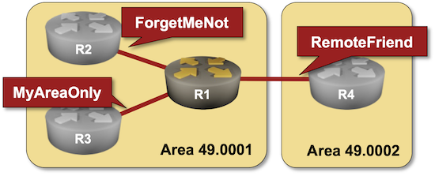
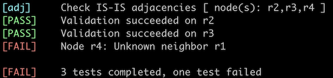

Protect IS-IS Routing Data with MD5 Authentication
Like OSPF and BGP, IS-IS contains a simple mechanism to authenticate routing traffic – IS-IS packets can include a cleartext password or an MD5- or SHA hash1. Unlike OSPF, IS-IS can authenticate:
- The packets exchanged between routers (hello packets)
- The contents of Link State PDUs flooded across an area or a domain.
Authenticating IS-IS traffic is not as critical as authenticating EBGP traffic. It’s almost impossible to inject IS-IS packets into a LAN segment the intruder is not connected to, and you’re not supposed to run an IGP on an untrusted network anyway.
Most IS-IS implementations have interface passwords (authenticating the IS-IS hello packets), area passwords (authenticating level-1 LSPs), and domain passwords (authenticating level-2 LSPs). You’ll practice configuring all three in this lab exercise.

Device Requirements
- Use any device supported by the netlab IS-IS configuration module for R1 (default: FRRouting virtual machines or containers).
- If you want preconfigured passwords for the other three routers (R2, R3, and R4), use FRRouting or Arista EOS. You can use any other device for these routers, but you’ll have to configure the passwords yourself.
- Automated lab validation requires FRRouting on R2, R3, and R4.
Starting the Lab
You can start the lab on your own lab infrastructure or in GitHub Codespaces (more details):
- Change directory to
feature/3-md5 - Execute netlab up. You’ll get a lab with IPv4 addresses configured on all interfaces and IS-IS routing configured on all routers.
- Log into lab routers with netlab connect and verify their configuration.
Initial Configuration
- R1, R2, and R3 are in IS-IS area 49.0001.
- R4 is in IS-IS area 49.0002.
- R1 (your router) and R2 are level-1-2 routers. R3 is a level-1 router, and R4 is a level-2 router.
- The link between R1 and R2 is a LAN (multi-access) link, the links R1-R3 and R1-R4 are point-to-point links.
The initial configuration should result in these IS-IS adjacencies:
| Link | Adjacency |
|---|---|
| R1-R2 | level-1 + level-2 |
| R1-R3 | level-1 |
| R1-R4 | level-2 |
However, R2, R3, and R4 use IS-IS MD5 authentication with these keys:
| Password type | Password |
|---|---|
| Interface | ForgetMeNot |
| Area (level-1) | MyAreaOnly |
| Domain (level-2) | CloseFriends |
The Problem
Some IS-IS implementations exhibit bizarre behavior when adjacent devices have an authentication mismatch. The device not using IS-IS authentication can claim full adjacency with its neighbors. In contrast, the adjacent device claims the adjacency is in the INIT state or shows no IS-IS neighbors on the interface.
For example, R1 running FRRouting claims it has three IS-IS neighbors and full adjacency with two of them.
IS-IS neighbors on R1 running FRRouting
$ netlab connect r1 --show isis neighbor
Connecting to container clab-md5-r1, executing vtysh -c "show isis neighbor"
Area Gandalf:
System Id Interface L State Holdtime SNPA
r2 eth1 1 Initializing 28 aac1.ab76.78a5
r2 eth1 2 Initializing 28 aac1.ab76.78a5
r3 eth2 1 Up 28 2020.2020.2020
r4 eth3 2 Up 28 2020.2020.2020
At the same time, R2 through R4 claim they have no IS-IS neighbors.
Arista EOS is a bit more consistent. R1 running Arista EOS claims to have three IS-IS neighbors, but the adjacency is stuck in the INIT phase.
IS-IS neighbors on R1 running Arista EOS
r1# show isis neighbor
Instance VRF System Id Type Interface SNPA State Hold time Circuit Id
Gandalf default 0000.0000.0002 L1 Ethernet1 52:dc:ca:fe:2:1 INIT 25 r1.97
Gandalf default 0000.0000.0002 L2 Ethernet1 52:dc:ca:fe:2:1 INIT 25 r1.97
Gandalf default 0000.0000.0003 L1 Ethernet2 P2P INIT 26 95
Gandalf default 0000.0000.0004 L2 Ethernet3 P2P INIT 23 98
Anyway, we know what’s wrong: R2, R3, and R4 use MD5 authentication and ignore unauthenticated packets sent by R12. Let’s fix it.
Configuration Tasks
Configure the following IS-IS passwords using authentication or password interface- or router configuration commands3:
| Password type | Password |
|---|---|
| Interface | ForgetMeNot |
| Area | MyAreaOnly |
| Domain | RemoteFriend |
Validation
You can use the netlab validate command if you run FRRouting on R2, R3, and R4. The validation process checks the IS-IS adjacency using IS-IS hostnames. The validation will succeed on R2 and R3 if you configured the interface password (otherwise, the IS-IS adjacency is not established) and the area password (otherwise, R2 and R3 see adjacent system ID 0000.0000.0001 but do not know it is R1). You must configure the domain password for the validation to succeed on R4.
For example, this is the printout you would get after configuring the interface- and area passwords:

You could also do manual validation:
- After configuring the interface passwords, all IS-IS adjacencies should be in UP state on all routers.
IS-IS neighbors on R1 running Arista EOS
r1#show isis neighbors
Instance VRF System Id Type Interface SNPA State Hold time Circuit Id
Gandalf default r2 L1 Ethernet1 52:dc:ca:fe:2:1 UP 8 r2.a4
Gandalf default r2 L2 Ethernet1 52:dc:ca:fe:2:1 UP 6 r2.a4
Gandalf default r3 L1 Ethernet2 P2P UP 22 A6
Gandalf default r4 L2 Ethernet3 P2P UP 28 A8
- You will not see R1 level-1 LSPs on other routers until you configure the area (level-1) password on R1. For example, this is the level-1 database on R2 when R1 has no area password. The R1 LSP is missing, and R3 is unreachable.
IS-IS level-1 database on R2 running Arista EOS
r2#show isis database level-1
Legend:
H - hostname conflict
U - node unreachable
IS-IS Instance: Gandalf VRF: default
IS-IS Level 1 Link State Database
LSPID Seq Num Cksum Life Length IS Received LSPID Flags
r2.00-00 3 61902 905 113 L2 0000.0000.0002.00-00 <>
U r2.a4-00 1 13264 905 70 L2 0000.0000.0002.a4-00 <>
U r3.00-00 3 58414 907 113 L1 0000.0000.0003.00-00 <>
- After configuring the area (level-1) password on R1, R2 and R3 should display R1’s LSPs in their level-1 database:
IS-IS level-1 database on R2 running Arista EOS contains authenticated R1 LSP
r2#show isis database level-1
Legend:
H - hostname conflict
U - node unreachable
IS-IS Instance: Gandalf VRF: default
IS-IS Level 1 Link State Database
LSPID Seq Num Cksum Life Length IS Received LSPID Flags
r1.00-00 9 61720 1195 150 L2 0000.0000.0001.00-00 <DefaultAtt>
r2.00-00 3 61902 842 113 L2 0000.0000.0002.00-00 <>
r2.a4-00 1 13264 842 70 L2 0000.0000.0002.a4-00 <>
r3.00-00 3 58414 844 113 L1 0000.0000.0003.00-00 <>
- Similarly, R2 and R4 won’t display R1 level-2 LSP until you configure the domain (level-2) password:
IS-IS level-2 database on R4 (running Arista EOS) does not contain the R1 LSP
r4#show isis database
Legend:
H - hostname conflict
U - node unreachable
IS-IS Instance: Gandalf VRF: default
IS-IS Level 2 Link State Database
LSPID Seq Num Cksum Life Length IS Received LSPID Flags
U r2.00-00 4 53488 1052 151 L2 0000.0000.0002.00-00 <>
U r2.a4-00 1 20572 711 70 L2 0000.0000.0002.a4-00 <>
r4.00-00 3 36459 711 113 L2 0000.0000.0004.00-00 <>
- After configuring the domain (level-2) password on R1, R2 and R4 should display R1’s LSPs in their level-2 database:
IS-IS level-2 database on R4 running Arista EOS contains authenticated R1 LSP
r4#show isis database
Legend:
H - hostname conflict
U - node unreachable
IS-IS Instance: Gandalf VRF: default
IS-IS Level 2 Link State Database
LSPID Seq Num Cksum Life Length IS Received LSPID Flags
r1.00-00 10 16371 1196 170 L2 0000.0000.0001.00-00 <>
r2.00-00 4 53488 983 151 L2 0000.0000.0002.00-00 <>
r2.a4-00 1 20572 642 70 L2 0000.0000.0002.a4-00 <>
r4.00-00 3 36459 642 113 L2 0000.0000.0004.00-00 <>
Next: Hide Transit Subnets in IS-IS Networks
Reference Information
Lab Wiring
| Origin Device | Origin Port | Destination Device | Destination Port |
|---|---|---|---|
| r1 | eth1 | r2 | eth1 |
| r1 | eth2 | r3 | eth1 |
| r1 | eth3 | r4 | eth1 |
Note: The interface names depend on the devices you use in the lab. The printout was generated with lab devices running FRRouting.
Lab Addressing
| Node/Interface | IPv4 Address | IPv6 Address | Description |
|---|---|---|---|
| r1 | 10.0.0.1/32 | Loopback | |
| eth1 | 10.1.0.1/30 | r1 -> r2 | |
| eth2 | 10.1.0.5/30 | r1 -> r3 | |
| eth3 | 10.1.0.9/30 | r1 -> r4 | |
| r2 | 10.0.0.2/32 | Loopback | |
| eth1 | 10.1.0.2/30 | r2 -> r1 | |
| r3 | 10.0.0.3/32 | Loopback | |
| eth1 | 10.1.0.6/30 | r3 -> r1 | |
| r4 | 10.0.0.4/32 | Loopback | |
| eth1 | 10.1.0.10/30 | r4 -> r1 |
-
Please note that the IS-IS packets are not encrypted. Anyone can see their contents, but the Hashed Message Authentication Code (HMAC) makes it really hard for an intruder to impersonate an IS-IS router using MD5 or SHA authentication (but not impossible as we know it’s possible to break MD5). ↩
-
Figuring that out from the show printouts, particularly when you don’t have access to the remote router, is an interesting hair-pulling exercise. ↩
-
Some implementations (for example, Arista EOS) call the area password level-1 and the domain password level-2. ↩